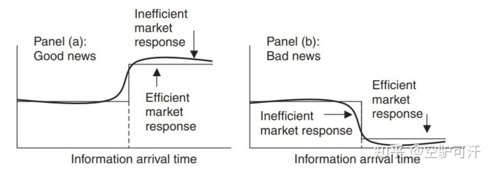

关于市场弱有效性的几种简易检验方法
检验市场的有效性是一件很重要的事。
因为只有当确立了市场不是有效的这一观念后，我们才能尝试从市场中赚到钱。

非参数游程检验（Wald–Wolfowitz runs test）
对于跑步检验来说，我们关心的就是游程的数量。
游程就是澳门赌场里的龙虎图，如果庄家连赢六把，那么这六把连赢就被称为长龙，或者是连续六条上涨的K线，即正游程，相反的，闲家连赢，或者是连续下跌的K线，即称为负游程。
一个游程由上涨下跌K线的转换开始，又在另一个转换处结束，如此一来，对于一段行情，我们可以得出它的预期总游程数量，如果预期的游程数量和实际观察值不符，则我们可以认为这段行情不是随机的，是可以想办法去预测的。
对于阳线与阴线数量分别为 [公式] 。
我们可以得出预期的游程数量 [公式] ，实际上就是 [公式] 与 [公式] 的调和平均加上常数1。
[公式]
对于游程数量的标准差 [公式] 为：
[公式]
如果我们算出的游程数量与预期不符，我们就可以得出结论 -- 关于这段行情是否是可预测的。
←